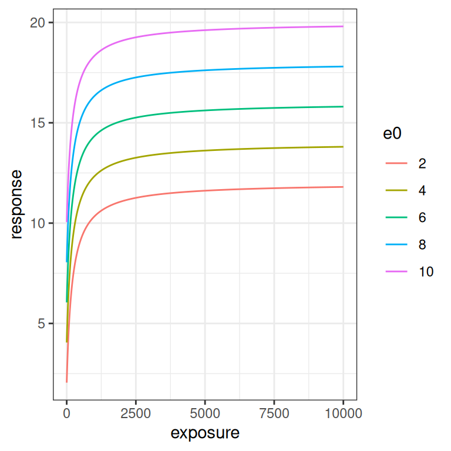
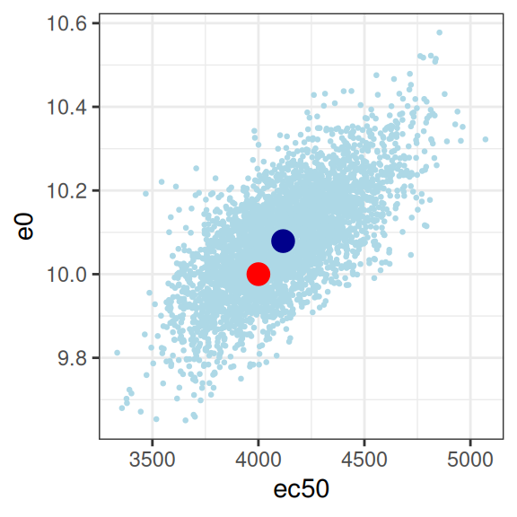

![]()
library(rstanemax)
library(ggplot2)
library(tibble)
library(tidyr)
library(dplyr)
library(purrr)And so we are writing again. Sort of.
This is a post about the Emax model, a commonly-used tool in pharmacometrics. I’ve written about it before. At the start of this year I wrote up some notes on the Emax model approaching it from a purely pharmacological perspective, discussing the mechanistic motivation for Emax when working with pharmacodynamic data. What I didn’t talk about in that post is the behaviour of Emax as a statistical model. It is time to redress that limitation, and talk a little about some issues that can arise when estimating the parameters of an Emax model.
It is also a post about the rstanemax package, a handy tool by Kenta Yoshida that I’ve only recently discovered, which provides for Bayesian estimation in R for the Emax model.1 The rstanemax package supplies a pre-defined implementation of the Emax model in Stan that you can call from R via rstan, and while I won’t be doing a deep dive into the package here, it’s a very convenient way for me to talk about some statistical issues that can arise in Emax modelling.
It’s also a rather long post, and I’ll confess it doesn’t have the same level of “authorial voice” that I usually bring to my blog. I have been feeling pretty miserable ever since the US election, and my energy levels are pretty low right now.2 Sorry.
The Emax model
Letting \(x_i\) denote the observed exposure for the \(i\)-th subject, and letting \(y_i\) denote the observed reponse, the form of the Emax model for a continuous-valued response3 is typically written as the following nonlinear regression model:
\[ y_i = E_0 + E_{max} \frac{x_i^\gamma}{EC_{50}^\gamma + x_i^\gamma} + \epsilon_i \]
where we typically assume iid normal residual error, \(\epsilon_i \sim \mbox{Normal}(0, \sigma^2)\). This model has five parameters that need to be estimated:
- \(E_0\) is an intercept term and represents the baseline response when drug exposure is zero
- \(E_{max}\) is an asymptote term and defines the maximum change from baseline as the drug exposure becomes arbitrarily large
- \(EC_{50}\) is a location parameter, and defines the exposure level at which the change from baseline is 50% of the maximum possible change
- \(\gamma\) is the “Hill coefficient” that describes the steepness of the response curve. It is not uncommon to fix \(\gamma = 1\) in Emax modelling, and for the purposes of this post that’s what I’ll be doing here
- \(\sigma^2\) is the residual variance used to describe the level of measurement error in the data
This situation is about as simple as you can possibly get within the Emax context: we’re abstracting over questions about how exposure is defined4, there are no covariates in the model, and we are assuming that the response variable \(y\) is continuous valued with normally distributed measurement error. It does not get any simpler than this in Emax-land.
To give a sense of what the Emax model equation (i.e., ignoring the \(\epsilon_i\) terms) looks like, we can implement in R like this:5
emax_fn <- function(exposure, emax, ec50, e0, gamma = 1, ...) {
e0 + emax * (exposure ^ gamma) / (ec50 ^ gamma + exposure ^ gamma)
}Here’s what the function looks like when visualised. On the left hand side the plot shows the exposure-response curve on a linear scale, whereas on the right hand side the exposure is plotted on a logarithmic scale.
dat <- tibble(
exposure = 1:10000,
response = emax_fn(exposure, emax = 10, ec50 = 200, e0 = 10)
)
pic <- ggplot(dat, aes(exposure, response)) +
geom_line() +
theme_bw()
pic
pic + scale_x_log10()In the linear version of the plot we see a steep initial rise in the response, followed by saturation as exposure increases. The logarithmic scale plot allows us to see what is happening with a little more precision: the Emax model implies a logistic relationship between response and log-exposure.6
To flesh out the intuition a little better, let’s systematically vary one parameter at a time and show what effect each parameter has on the Emax function. To that end I’ll first write a convenience function emax_effect()…
emax_effect <- function(exposure = 1:10000,
emax = 10,
ec50 = 200,
e0 = 10,
gamma = 1,
...) {
expand_grid(
exposure = exposure,
emax = emax,
ec50 = ec50,
e0 = e0,
gamma = gamma
) |>
mutate(
response = emax_fn(exposure, emax, ec50, e0, gamma),
emax = factor(emax),
ec50 = factor(ec50),
e0 = factor(e0),
gamma = factor(gamma)
) |>
ggplot(aes(exposure, response, ...)) +
geom_line() +
theme_bw()
}The simplest parameter to understand is \(E_0\). It’s an intercept parameter pure and simple. The whole curve shifts up and down as you vary \(E_0\), exactly like it would in linear regression:
emax_effect(e0 = seq(2, 10, 2), color = e0)
emax_effect(e0 = seq(2, 10, 2), color = e0) + scale_x_log10()
The \(E_{max}\) parameter is a scaling coefficient applied to the exposure. It is roughly analogous to a slope parameter in linear regression, in the sense that increasing \(E_{max}\) “stretches” the curve vertically. More precisely though, increasing \(E_{max}\) shifts the asymptotic value for the response: at large exposures the response saturates at \(E_0 + E_{max}\), and the curve is scaled to accomodate this.
emax_effect(emax = seq(2, 10, 2), color = emax)
emax_effect(emax = seq(2, 10, 2), color = emax) + scale_x_log10()If you compare these plots to the previous ones, you can see why its important to look at the Emax function on the logarithmic scale as well as the linear scale. The difference between how \(E_0\) and \(E_{max}\) affect the curve are difficult to see on the linear scale, but are very pronounced on the logarithmic scale. This will turn out to be relevant later: if you don’t have a lot of data at the lower end of the log-exposure distribution, it is very hard to estimate \(E_0\) and \(E_{max}\) separately. But I am getting ahead of myself.
Let’s now look at the effect of \(EC_{50}\). This parameter doesn’t have an exact analog in the linear regression context, but the plots below illustrate the effect this parameter has rather nicely: it’s a shift parameter that moves the whole curve (on the log-scale) rightwards as it increases.
emax_effect(ec50 = seq(50, 400, 50), color = ec50)
emax_effect(ec50 = seq(50, 400, 50), color = ec50) + scale_x_log10()Because \(EC_{50}\) is on the same scale as the exposure, the size of the rightward shift scales logarithmically rather than linearly as the parameter is varied.
Finally, let’s quickly look at what happens when the Hill coefficient \(\gamma\) is varied. To be honest, I’m not going consider \(\gamma\) in this post, but it’s still kind of useful to visualise what it does. As usual it’s easier to see the effect on the log-exposure scale. As you can see from the plot on the right, at higher \(\gamma\) values the logistic curve is steeper.
emax_effect(gamma = 1:5, color = gamma)
emax_effect(gamma = 1:5, color = gamma) + scale_x_log10()
Now that we have a general sense of how the Emax function behaves, we can start thinking about it as a statistical model and look at what we expect data to look like when the Emax model applies.
Simulated exposures
Generating simulated data to fit with an Emax model is slightly tricky, even in the very simple scenario I’m considering. Generating fictitious response data conditional on having a set of observed exposures is easy: the Emax function itself tells you how to generate \(y_i\) (response) values given \(x_i\) (exposures). Yes, there’s some nuance involved because the additive normal error model for \(\epsilon_i\) (residuals) is a bit silly if you take it literally, but that’s not the hard part.
The hard part is generating a set of exposures \(x_i\) that are presumed to arise from your experimental design.
The reason this part is difficult is that the Emax model is silent on where those exposures come from. As I talked about in the notes on the Emax model post, the scientific justification for the Emax function is based on some (not unreasonable) assumptions about the mechanism of action for the drug. It has a clear interpretation for exposure measures (e.g., \(C_{max,ss}\), \(C_{min,ss}\)) that correspond to the concentration at a specific moment in time, and while you do have to hand-wave a little more when considering time-averaged exposures or area under the curve (\(AUC_{ss}\)) measures, it does make a certain amount of biological sense. Even so, the Emax model is a pharmacodynamic model and is not in any meaningful sense a pharmacokinetic model: you can’t extract exposure measures PK profiles from the Emax model in the same way you can for a compartmental model (e.g. here, here, and here). It’s not designed for that purpose, and I have absolutely no intention of trying to generate fictitious exposures based on a compartmental model simply to play around with Emax. With that in mind I’ve adopted a semi-plausible compromise. Conditional on dose, I will assume for the current purposes that our exposure measure (whatever exposure measure we’re using) is approximately lognormally distributed,7 and I’ll assume that exposure scales linearly with dose. Neither of those two assumptions holds true in general, but it’s good enough for a blog post. You can do this with a simple function like generate_exposure() below, and that will be good enough for now:
generate_exposure <- function(dose, n, meanlog = 4, sdlog = 0.5) {
dose * qlnorm(
p = runif(n, min = .01, max = .99),
meanlog = meanlog,
sdlog = sdlog
)
}Next we need to make some assumptions about the study design.
Let’s suppose for simplicity we have a three-arm design in a phase 2 study that consists of 20 subjects in a placebo arm, alongside 100 subjects each in a 100 mg dosing arm and a 50 mg dosing arm.8 However, it’s not uncommon to encounter exposure-response data sets where these phase 2 data are intermixed with a smaller data set from a phase 1 dose escalation trial (e.g., from a 3+3 design), and these samples can span a substantially wider range of exposures. Rather than try to simulate this in full, I’ll approximate this by including “phase 1” arms that have 3 subjects each at 25, 50, 100, 200, 300, 400, 500, and 600 mg doses.9
Given this, for each subject we use the generate_exposure() function to assign them an exposure level:10 11
make_data <- function(dose, n, condition) {
tibble(
dose = dose,
exposure = generate_exposure(max(dose, .01), n = n),
condition = condition
)
}
full_design <- bind_rows(
make_data(dose = 100, n = 100, condition = "100 mg"),
make_data(dose = 50, n = 100, condition = "50 mg"),
make_data(dose = 0, n = 20, condition = "placebo"),
make_data(dose = 25, n = 3, condition = "phase 1"),
make_data(dose = 50, n = 3, condition = "phase 1"),
make_data(dose = 100, n = 3, condition = "phase 1"),
make_data(dose = 200, n = 3, condition = "phase 1"),
make_data(dose = 300, n = 3, condition = "phase 1"),
make_data(dose = 400, n = 3, condition = "phase 1"),
make_data(dose = 500, n = 3, condition = "phase 1"),
make_data(dose = 600, n = 3, condition = "phase 1")
)
full_design# A tibble: 244 × 3
dose exposure condition
<dbl> <dbl> <chr>
1 100 4271. 100 mg
2 100 3973. 100 mg
3 100 5823. 100 mg
4 100 2563. 100 mg
5 100 5253. 100 mg
6 100 5352. 100 mg
7 100 8409. 100 mg
8 100 4643. 100 mg
9 100 5782. 100 mg
10 100 3434. 100 mg
# ℹ 234 more rowsThis is all a bit hand-wavy, as any pharmacometrician will immediately note. The dosing and sampling regimen aren’t specified in any detail: I am simply assuming that whatever happens on the PK side is such that we can pretend that exposure is approximately lognormal and scales with dose.
But let’s set all that to one side and take a look at the distribution of exposures we end up with in an experimental design like this:
pic <- ggplot(full_design, aes(exposure, fill = condition)) +
geom_histogram(bins = 20) +
theme_bw() +
theme(legend.position = "bottom")
pic
pic + scale_x_log10()The main thing to note, looking at the histograms that come from this highly-stylised simulated design, is the data that would end up being “visible” as the predictor in an Emax model are a set of exposures \(x_i\) that have a positively skewed distribution and are rather unevenly distributed across the exposure range.12 A somewhat more conventional way of looking at this would be to show exposure boxplots stratified by condition, on both a linear scale and a logarithmic scale:
pic <- ggplot(full_design, aes(condition, exposure, fill = condition)) +
geom_boxplot(show.legend = FALSE) +
theme_bw()
pic
pic + scale_y_log10()Later in this post I’ll come back to this “full” data set that contains placebo samples and phase 1 dose-escalation samples. But I also want to consider the behaviour of the Emax model when you don’t have either of those two groups in the data set. The reason I want to do this is because an Emax model carries a strong assumption that lower and upper bounds for the response can be identified from the data, and it’s not obvious to me that it will behave well if the range of exposures is somewhat restricted.
In any case, when we restrict ourselves to the data that emerge from the 50 mg and 100 mg arms of our hypothetical study data, we end up with a vector of exposure values \(x_i\) that looks a little bit like a log-normal distribution:
small_design <- full_design |>
filter(condition %in% c("50 mg", "100 mg"))
ggplot(small_design, aes(exposure)) +
geom_histogram(bins = 20) +
theme_bw()Hopefully this gives you a sense of what both designs look like.13 Let’s move on, shall we?
Simulated data
Having made some choices about the exposure vector that will be supplied to our Emax model, the rest of the simulation process is “just” a matter of writing some convenience functions that we can use later for exploring the behaviour of the model. First, I’ll write an emax_parameters() function that supplies default values, so that if I call emax_parameters(emax = 20), I end up with a list that stores this emax value alongside all the defaults:
emax_parameters <- function(emax = 10,
ec50 = 4000,
e0 = 10,
gamma = 1,
sigma = .6) {
list(
emax = emax,
ec50 = ec50,
e0 = e0,
gamma = gamma,
sigma = sigma
)
}
par1 <- emax_parameters() # default parameters
par1$emax
[1] 10
$ec50
[1] 4000
$e0
[1] 10
$gamma
[1] 1
$sigma
[1] 0.6Truly exciting work, I know, but my experience with statistical programming has always been that it pays to take care of these little niceties. Convenience functions like this one don’t play any meaningful scientific role, nor are they important for understanding the statistical properties of the Emax model, but they do make the code easier to read and write.
Along the same lines, I’ll also write a generate_emax_data() function that takes an exposure vector and a parameter list (par) as its arguments, and returns a nicely formatted data frame:
generate_emax_data <- function(exposure, par = list()) {
par <- do.call(emax_parameters, args = par)
n <- length(exposure)
tibble(
exposure = exposure,
emax_val = emax_fn(
exposure,
emax = par$emax,
ec50 = par$ec50,
e0 = par$e0,
gamma = par$gamma
),
response = emax_val + rnorm(n, 0, par$sigma)
)
}And just like that we can generate fictitious data sets to which an Emax model can be applied, containing exposure and response columns that are broadly analogous to those we encounter in real data (albeit without any covariate information, etc), along with an emax_val column that removes measurement error from the response, and of course wouldn’t be available in real life:
dat1 <- generate_emax_data(
exposure = small_design$exposure,
par = par1
)
dat1# A tibble: 200 × 3
exposure emax_val response
<dbl> <dbl> <dbl>
1 4271. 15.2 14.8
2 3973. 15.0 15.2
3 5823. 15.9 15.0
4 2563. 13.9 13.6
5 5253. 15.7 15.5
6 5352. 15.7 16.3
7 8409. 16.8 16.5
8 4643. 15.4 15.6
9 5782. 15.9 15.7
10 3434. 14.6 14.1
# ℹ 190 more rowsTo get a better sense of what these data look like I wrote a convenient plot_emax_data() function that draws a scatterplot of observed response values against observed exposures (black dots), with the true emax function plotted as an underlay (black line), plus a few guide lines that I’ll explain in a moment. Here’s the code for the plotting function:
plot_emax_data <- function(data, par) {
min_x <- min(data$exposure)
max_x <- max(data$exposure)
pred <- tibble(
exp = seq(min_x, max_x, length.out = 1000),
rsp = do.call(emax_fn, args = c(list(exposure = exp), par))
)
data |>
ggplot(aes(exposure, response)) +
geom_vline(xintercept = par$ec50, color = "red") +
geom_hline(yintercept = par$e0 + par$emax, color = "red") +
geom_hline(yintercept = par$e0 + par$emax/2, color = "red") +
geom_hline(yintercept = par$e0, color = "red") +
geom_line(
data = pred,
mapping = aes(exp, rsp)
) +
geom_point() +
theme_bw()
}The data set dat1 I generated previously is the one I’m going to use later when considering ways in which the Emax regression model can behave poorly, but for reasons that will become clear, I’m actually going to illustrate the plot_emax_data() function by generating a data set that all samples in the full design. Here’s what we get:
pic <- full_design$exposure |>
generate_emax_data(par = par1) |>
plot_emax_data(par = par1)
pic Looking at this we can see that the black dots are our observed14 data, and the black line is the true Emax function that descrives the exposure-response relationship. Moving upwards from bottom to top, the three red horizontal lines correspond to the baseline response (i.e., \(E_0\)), the 50% response (i.e., \(E_0 + E_{max}/2\)), and the maximum response (i.e., \(E_0 + E_{max}\)). The vertical red line is the concentration at which the 50% response is attained (i.e., \(EC_{50}\)). In other words, the red lines exist to highlight the parameter values for the Emax function.
Next, let’s redraw this with a logarithmic x-axis scale:
pic + scale_x_log10()When plotted like this, you get a much stronger sense of how much influence a placebo sample15 can have on the model. In the first plot you could be forgiven for thinking it doesn’t matter much, but when you see it on a logarithmic scale you realise how big a role a placebo group can play in ensuring you can correctly identify the baseline response!
You can also understand why, all of a sudden, I am wondering if the Emax model might start to misbehave if we feed it data that don’t have any placebo samples.
With that as our motivation, let’s go back to our dat1 data set (constructed using the small design), since that one deliberately doesn’t contain the placebo group. Here’s what the plots look like for this data set:
plot_emax_data(dat1, par1)
plot_emax_data(dat1, par1) + scale_x_log10()This is a pretty interesting test case for our Emax model. Will it work out okay, or not? There’s two different factors to consider:
On the one hand, even a moments inspection of the red lines in the plot (which, I cannot stress enough, you never have access to in real life) tells us that the observed exposures and responses are somewhat truncated compared to the full range: the true response should vary between 10 and 20 units, but the vast majority of our observed responses fall between 12.5 and 17.5 units. Crudely put, we’re missing about half of the response range. It’s a difficult test case in that sense, but it’s also not that unrealistic: I’ve seen a lot of data sets where the exposure-response relationship looks awfully linear on the log-exposure scale.
On the other hand, it’s not the worst possible scenario to think about. If you look at the distribution of the black dots you can they’re nicely distributed on either size of the vertical red line: about half of our observed exposures are below the true \(EC_{50}\) value, and about half are above. Consequently, the model can “see” both sides of the log-logistic function when estimating parameters. So that’s a plus.
Specifying the priors
To find out what actually happens, we can use stan_emax() from the rstanemax package to estimate parameters. However, because we will be fitting a Bayesian model, we need to do a little more work to complete the model specification. Specifically, we need to set priors.16
Setting priors in rstanemax
The rstanemax package assumes that the priors for the four Emax parameters are independent and normal, and as such we simply describe the prior mean and prior standard deviation for each parameter.17 The priors argument to stan_emax() takes a named list as input, where each element is a vector specifying the mean and standard deviation of the corresponding normal distribution. So we could construct an object like my_prior below,
my_prior <- list(
e0 = c(10, 5), # e0 prior has mean = 10, sd = 5
ec50 = c(4000, 1000), # ec50 prior has mean = 4000, sd = 1000
emax = c(5, 5), # emax prior has mean = 5, sd = 5
sigma = c(.6, 1) # sigma prior has mean = .6, sd = 1
)and then pass prior = my_prior when calling stan_emax(). In the simulations that follow, I’m going to “cheat” a little by specifying priors that always – somewhat miraculously – place the prior mode on the true parameter values that generate the data to be fit, and always have a rather large variance. This is not a very reasonable way of working with priors in real life: I am cutting corners here.
Having said all that, this is the rather silly emax_priors() function I’m going to use:
emax_priors <- function(par) {
list(
e0 = c(par$e0, 100),
ec50 = c(par$ec50, 5000),
emax = c(par$emax, 100),
sigma = c(par$sigma, 1)
)
}It’s very boring.
The thing you actually want to pay attention to here are the standard deviations: they’re all very big. While I’m “centering” my priors (sort of: see next section) so that the prior mode will always be the “true” parameter set (passed via par) that was used to generate the data, the prior variability is set very high… the models I’ll be fitting are extremely agnostic about what parameter values and what data sets they’re expecting to see.
Truncated normals are weird
At this point in the post, any Bayesian who isn’t new to this game is sighing wearily and muttering darkly about the dangers of setting “agnostic” priors. They would be right to do so. There’s this very naive idea in Bayesian analysis that the best thing to do when fitting models is to set an “uninformative” prior, in order to “let the data speak for themselves”. While that intuition has a certain appeal, it often creates new problems when it runs head first into the data.
With that in mind, I’ll highlight one example that is particularly relevant if you’re fitting Emax models using the rstanemax pacakge: truncation matters. Although the documentation to stan_emax() indicates that the priors are normal, this is not entirely true due to the logical constraints imposed on the model parameters: ec50 and sigma cannot be negative valued, and when you peek inside at the stan code you can see that this constraint is enforced. That is, while the model{} block contains these two lines which might suggest to you that the priors are normal,
ec50 ~ normal(prior_ec50_mu, prior_ec50_sig);
sigma ~ normal(prior_sigma_mu, prior_sigma_sig);if you look at the parameters{} block you discover that rstanemax imposes the non-negativity constraint on both of these parameters:
vector<lower = 0>[n_covlev_ec50] ec50;
real<lower = 0> sigma;This constraint is entirely appropriate: negative variances don’t make any sense (so sigma must be positive), and neither do negative exposures (so ec50 must be positive). In practice, therefore, your priors for ec50 and sigma are in fact truncated normal distributions.18
Noting this, I’ll cobble together a little R function that allows me to sample from a truncated normal distribution:19
rtnorm <- function(n, mean = 0, sd = 1, lower = -Inf, upper = Inf) {
min_q <- pnorm(lower, mean, sd)
max_q <- pnorm(upper, mean, sd)
u <- runif(n, min = min_q, max = max_q)
qnorm(u, mean, sd)
}Armed with this handy little function, and the emax_fn() function that I wrote earlier, it’s not too difficult to construct a data frame prior_draws that contains a bunch of parameter sets sampled from the “vague” priors I’m about to use when applying the stan_emax() function:
# total number of draws
n_draws <- 5000
# table of parameters
prior_draws <- tibble(
id = 1:n_draws,
emax = rnorm(n_draws, mean = 10, sd = 100),
ec50 = rtnorm(n_draws, mean = 2000, sd = 5000, lower = 0),
e0 = rnorm(n_draws, mean = 10, sd = 100),
sigma = rtnorm(n_draws, mean = .6, sd = 1, lower = 0)
)Here’s what the prior distribution of parameters looks like…
prior_draws |>
pivot_longer(
cols = emax:sigma,
names_to = "parameter",
values_to = "value"
) |>
ggplot(aes(parameter, value)) +
geom_violin(draw_quantiles = .5) +
facet_wrap(~parameter, scales = "free", nrow = 1) +
theme_bw()The key thing to note here is that using a truncated normal prior for ec50 and sigma leads to a prior that can be highly skewed. That’s not inherently a bad thing, in the sense that there is absolutely no reason at all to think that a prior over ec50 (which lies on the same scale as the exposures) should be symmetric. However, it does mean that the prior mode, prior mean, and prior median will all be different from one another. In this case, for example, the mean/median/mode for my untruncated prior over ec50 was set to 2000, and this is indeed the prior mode, but the prior median is actually closer to 5000. So one needs to be rather careful when setting priors here. If you don’t spend a bit of time thinking about what they actually entail, they might not mean what you think they mean.
In my little explorations in this blog post, I’m happy to run with these priors, but in real life I think I’d want to pin this down a little better than I have done here. On the statistical side, if I was truly expecting an ec50 value somewhere around 2000, I don’t think I’d like to use a prior like this one where the prior median sits closer to 5000. Similarly, if the clinical pharmacology folks were telling me that I should expect a positive exposure-response relationship, my prior should strongly prefer positive emax values rather than the “anything goes” prior I’ve set here.
Implied prior over Emax functions
In fact, I’m going to push this point a little further. An alternative (and sometimes better) way to think about the priors that you’ve supplied to a Bayesian model is to explore what the prior corresponds to in terms of possible data sets that the model expects to encounter. In this case, I’ll simplify this slightly and restrict myself to thinking about the possible Emax functions that are implied by my priors. To that end, I’ll construct anemax_draws data frame that maps each parameter set (well, the first 250 of them) to an Emax function so that we can draw all these functions in a single plot:
emax_draws <- prior_draws |>
filter(id <= 250) |>
pmap(\(id, emax, ec50, e0, sigma) {
tibble(
id = id,
exposure = 1000:10000,
response = emax_fn(
exposure = exposure,
emax = emax,
ec50 = ec50,
e0 = e0
)
)
}) |>
bind_rows()Here’s what those 250 Emax functions look like, shown on a linear exposure scale (left) and logarithmic exposure scale (right):
pic <- emax_draws |>
ggplot(aes(exposure, response, group = id)) +
geom_line(alpha = .5) +
theme_bw()
pic
pic + scale_x_log10()The take home message here, really, is that the priors I’ve specified here are very agnostic indeed. There are a lot of possible Emax functions that are encompassed by this vague prior, and while I’m willing to consider a prior like this in this blog post – after all, the whole point of the post is for me to play around with the model – in a serious modelling exercise you’d want to ask yourself ahead of time whether this is really the variety of possible Emax functions you’re expecting to see in your study data.
But enough about priors. Let’s actually fit the models and see what happens next.
Fitting the model
We finally arrive at the point in the post where I can start applying the model to simulated data. I’ll start by using the full data set I simulated at the beginning (i.e., including the placebo and the phase 1 conditions), and using the “default” emax parameters that I’ve chosen secure in the knowledge that they are well suited to the design. Here’s what the data set looks like in this case:
par0 <- emax_parameters()
dat0 <- generate_emax_data(full_design$exposure)
plot_emax_data(dat0, par0)
plot_emax_data(dat0, par0) + scale_x_log10()Despite all the exhausting legwork I’ve done in setting the stage, the process of estimating the model parameters with stan_emax() is extremely straightforward. There are three arguments we need to specify:
- The
formulaargument provides the specification of the Emax model in standard regression notation, so in this case that would beformula = response ~ exposure - The
dataargument is used to pass the data set, so in this case we sedata = dat0 - The
priorsargument is used to specify the (truncated) normal prior for the Emax regression model. Having written the convenience functionemax_priors(), all I have to do here ispriors = emax_priors(par0)
Here we go:
mod0 <- stan_emax(
formula = response ~ exposure,
data = dat0,
priors = emax_priors(par0)
)Normally, when you run this command you would see all the messaging that accompanies any other stan model fitting procedure. However, I’ve suppressed the messages here to keep the blog post clean(ish). If we print the mod0 object that stan_emax() returns, we can see that it gives us a convenient little summary of the posterior distribution, some point estimates of parameters, and some helpful hints about what other functions we can call to extract more information from this model object:20
mod0---- Emax model fit with rstanemax ----
mean se_mean sd 2.5% 25% 50% 75% 97.5%
emax 9.95 0.00 0.20 9.56 9.82 9.94 10.08 10.33
e0 10.08 0.00 0.12 9.83 10.00 10.08 10.16 10.33
ec50 4116.54 5.94 251.66 3647.91 3944.70 4108.53 4279.38 4646.47
gamma 1.00 NaN 0.00 1.00 1.00 1.00 1.00 1.00
sigma 0.57 0.00 0.03 0.52 0.55 0.57 0.58 0.62
n_eff Rhat
emax 2498.59 1
e0 1743.98 1
ec50 1797.71 1
gamma NaN NaN
sigma 3151.35 1
* Use `extract_stanfit()` function to extract raw stanfit object
* Use `extract_param()` function to extract posterior draws of key parameters
* Use `plot()` function to visualize model fit
* Use `posterior_predict()` or `posterior_predict_quantile()` function to get
raw predictions or make predictions on new data
* Use `extract_obs_mod_frame()` function to extract raw data
in a processed format (useful for plotting)To get a sense of what we can do with some of these helper functions, I’ll just call the plot method and see what it creates:
plot(mod0)Okay yes that’s a sensible default: the plot() method returns a ggplot2 object that can be styled however you like. The plot itself shows a scatterplot of the data, the estimated regression line, and a 90% credible interval around that line. The plot method contains additional arguments that you can use to customise the output. Of particular interest are these four:
show.ciis a logical value indicating whether a credible interval should be displayed (default isTRUE)show.piis a logical value indicating whether a prediction interval should be displayed (default isFALSE)ciandpirefer to the range of the intervals (default is 0.9 in both cases)
So, for instance, if I wanted to display a 95% prediction interval instead of a 90% credible interval, and wanted to use the black and white theme I’ve been using for other plots in this blog post, I could do this:
pic <- plot(mod0, show.ci = FALSE, show.pi = TRUE, pi = 0.95) + theme_bw()
picThe fact that this is a ggplot object makes it easy to replot this on a log-exposure scale:
pic + scale_x_log10()As much as I like the plot that gets returned by the plot() method, it’s not quite what I want to look at in this post. I’m more curious about the posterior distribution itself, so instead I’ll use the extract_param() function to recover the parameter sets sampled by stan:
smp0 <- extract_param(mod0)
smp0# A tibble: 4,000 × 6
mcmcid emax e0 ec50 gamma sigma
<int> <dbl> <dbl> <dbl> <dbl[1d]> <dbl[1d]>
1 1 10.2 10.0 4141. 1 0.552
2 2 10.1 9.99 4103. 1 0.550
3 3 9.63 9.96 3652. 1 0.550
4 4 9.97 10.0 4026. 1 0.555
5 5 10.2 9.99 4248. 1 0.593
6 6 9.92 10.2 4325. 1 0.580
7 7 10.0 9.90 3793. 1 0.595
8 8 9.73 9.92 3639. 1 0.560
9 9 9.65 9.97 3759. 1 0.545
10 10 10.1 10.2 4528. 1 0.544
# ℹ 3,990 more rowsThen I’ll write a handy little helper function that returns a list of pairwise scatterplots so that I can better visualise the joint distribution over the parameters:
plot_emax_pars <- function(data, par = list()) {
plot_pair <- function(data, x, y, true_x, true_y) {
est <- data |>
summarise(
mx = mean({{x}}),
my = mean({{y}})
)
ggplot(data, aes({{x}}, {{y}})) +
geom_point(size = .5, color = "lightblue") +
annotate("point", x = true_x, y = true_y, color = "red", size = 4) +
annotate("point", x = est$mx, y = est$my, color = "darkblue", size = 4) +
theme_bw()
}
list(
plot_pair(data, emax, ec50, par$emax, par$ec50),
plot_pair(data, emax, e0, par$emax, par$e0),
plot_pair(data, ec50, e0, par$ec50, par$e0)
)
}Here’s what we get:
smp0 |>
plot_emax_pars(par0) |>
walk(print)
This looks good to me. The estimated parameter values (dark blue dots) are pretty close to the true parameter values (red dots), and the true values are well within the high-density region spanned by the posterior samples (light blue dots). The posterior looks pretty close to a multivariate normal, there aren’t strong correlations among parameters, and there’s not even a lot of uncertainty (i.e., the axis scales aren’t very wide) either. For the record, here’s the posterior correlations:
smp0 |>
select(emax, e0, ec50, sigma) |>
cor() emax e0 ec50 sigma
emax 1.0000000000 -0.276390637 0.465365131 0.0001689484
e0 -0.2763906372 1.000000000 0.679605961 -0.0064145249
ec50 0.4653651313 0.679605961 1.000000000 -0.0027118046
sigma 0.0001689484 -0.006414525 -0.002711805 1.0000000000Yep, all good here. Mission accomplished, good job everyone, we can all go home now.
Identifiability issues
Well, perhaps not. Earlier in the post I heavily foreshadowed the fact that I would take a look at what happens when the exposure values don’t include the placebo group or the phase 1 dose escalation samples. When those are removed from the data set we start to encounter problems associated with a restriction of range, and this really matters for an Emax regression model. There’s three versions of this scenario to consider, depending on whether the exposure range is restricted but happens to have the true value of ec50 nicely centred in the middle of the range (scenario 1), if ec50 lies at the lower end of the observed exposures (scenario 2), or if ec50 is at the upper end (scenario 3). In all three cases we end up with some identifiability issues, but they aren’t equally severe.
Scenario 1
So let’s start with the first scenario. This happens to correspond to the dat1 data set I constructed earlier, but as a little reminder, here’s the what we’re trying to fit:
plot_emax_data(dat1, par1)
plot_emax_data(dat1, par1) + scale_x_log10()

You can see in the plot on the right (log-exposures) that we might have some difficulties, because the exposure-response curve looks rather linear here. But there are some hints of curvature at both ends, so perhaps it won’t be too bad?
Let’s have a look. First, we fit the model:
mod1 <- stan_emax(
formula = response ~ exposure,
data = dat1,
priors = emax_priors(par1)
)Next, we’ll see what the model predictions look like by calling the plot() method:
base <- plot(mod1, show.ci = FALSE, show.pi = TRUE, pi = 0.95)
base + theme_bw()
base + theme_bw() + scale_x_log10()Now let’s visualise the posterior samples:
smp1 <- extract_param(mod1)
smp1 |>
plot_emax_pars(par1) |>
walk(print)So we have a glaringly strong posterior correlation between e0 and ec50, which will cause us some difficulty, but apart from that obvious concern, this isn’t the worst outcome in the world. The posterior mean (dark blue dots) for the three parameters I’m most interested in sits pretty close to the true parameter values (red dots) that generated the data set, and the posterior distribution (light blue dots) is reeeeaaaassssonably close to being a multivariate normal distribution, and as such it’s not unreasonable to express the patterns by computing a variance-covariance matrix or a correlation matrix:
smp1 |>
select(emax, e0, ec50, sigma) |>
cor() emax e0 ec50 sigma
emax 1.00000000 -0.01960671 0.39357381 0.02890908
e0 -0.01960671 1.00000000 0.89987537 0.03791181
ec50 0.39357381 0.89987537 1.00000000 0.05428227
sigma 0.02890908 0.03791181 0.05428227 1.00000000Confirming the visual pattern observed in the rightmost plot, we have a bit of an identifiability problem: a posterior correlation of about \(r = 0.9\) between ec50 and e0 isn’t great. Confirming the intuition earlier in the post, because we don’t have a placebo group to help us pin down the baseline response, the Emax regression ends up unable to distinguish these parameters. You could work with this, but a lot of care would be required in interpreting the results.
Scenario 2
In the first example it’s fairly clear that Emax regression can have model identifiability problems when we don’t have a wide enough range of exposures represented in the data. However, you might be inclined not to worry too much in the previous example because – high correlations notwithstanding – our point estimates for the parameters were actually pretty good. However, this turns out to be a cold comfort at best, as the next scenario illustrates.
Last time around, we were a little fortunate: the true value of ec50 was set to 4500, which is is pretty close to the median value in the exposure vector. An alternative case to think about is one where the true value of ec50 is substantially below the median exposure in your data set. So let’s repeat the simulation exactly as before, but this time I’ll set ec50 = 2000 when generating the data set, placing it somewhere around the 10th percentile for exposures. Here’s what we get:
par2 <- emax_parameters(ec50 = 2000) # around 10th percentile
dat2 <- generate_emax_data(small_design$exposure, par2)
plot_emax_data(dat2, par2)
plot_emax_data(dat2, par2) + scale_x_log10()With the benefit of knowing that this is a simulation, and thus having the ability to draw the red lines that show us exactly what region of the exposure range is poorly represented in our data set, we can already see this is going to end badly. Even on the linear scale (left plot) we can see the problem: we don’t have a placebo group here, and the lowest response values in the data are nowhere near the actual value of e0 for the baseline response.
On the log-exposure scale the problem is even more painfully obvious: according to the Emax model the response should be a logistic function (3 parameters) of the log-exposure, but over the range we have data for the function looks linear (2 parameters). There is no chance whatsoever that any statistical method will be able to use these data to identify all our parameters. The signal we need is simply not there in the data.
Let’s watch the trainwreck unfold, shall we? First, let’s fit the model:
mod2 <- stan_emax(
formula = response ~ exposure,
data = dat2,
priors = emax_priors(par2)
)Next, let’s have a look at the posterior predictions. These actually look okay on the whole:
base <- plot(mod2, show.ci = FALSE, show.pi = TRUE, pi = 0.95)
base + theme_bw()
base + theme_bw() + scale_x_log10()Ah, but what about the parameter estimates, I hear you ask? Well, that’s when everything goes pear-shaped:
mod2 |>
extract_param() |>
plot_emax_pars(par2) |>
walk(print)mod2 |>
extract_param() |>
select(emax, e0, ec50, sigma) |>
cor() emax e0 ec50 sigma
emax 1.00000000 -0.96880835 -0.82131556 -0.01762361
e0 -0.96880835 1.00000000 0.92715674 0.03022421
ec50 -0.82131556 0.92715674 1.00000000 0.06361717
sigma -0.01762361 0.03022421 0.06361717 1.00000000So yeah, it’s bad. Not only are all three parameters correlated in an unpleasant way, the posterior distribution is starting to look rather non-normal so it’s not even obvious we should trust the correlation matrix to be telling us anything except the fact that we have severe model identifiability problems here. Sure, your model fits are actually pretty good as the plot below illustrates, but you have almost no idea what the values of emax, e0, or ec50 actually are. In the end, even though the true relationship is an Emax function, the impoverished nature of the data means that attempting to fit an Emax regression model to the data in this situation becomes a classic case of overfitting.
Scenario 3
In scenario 1, the data set had a limited range of exposures but as it happened the true value of ec50 is right in the middle of that range. We ended up with some identifiability problems, but not horribly bad ones. In scenario 2, however, the true value of ec50 was at the lower end of our observed exposures: that turned out to be a huge problem for us.
So what happens when the true value of ec50 is at the upper end of the measured exposure levels? To explore this, I’ll repeat the same exercise but this time set the true value of ec50 to 6500 units, which puts it at about the 80th percentile of the exposures represented in our exposure vector. Here’s what the data look like in this situation:
par3 <- emax_parameters(ec50 = 6500) # around 80th percentile
dat3 <- generate_emax_data(small_design$exposure, par3)
plot_emax_data(dat3, par3)
plot_emax_data(dat3, par3) + scale_x_log10()This is essentially the inverse of what we saw in scenario 2. The data don’t look terrible at the lower end of the observed exposure range, but at the upper end we have very few samples to work with. We might have problems again. Let’s fit the model:
mod3 <- stan_emax(
formula = response ~ exposure,
data = dat3,
priors = emax_priors(par3)
)As before, the posterior predictions aren’t too bad. The model does actually fit the data and make reasonable predictions about where future data might fall:
base <- plot(mod3, show.ci = FALSE, show.pi = TRUE, pi = 0.95)
base + theme_bw()
base + theme_bw() + scale_x_log10()But once again, when we look at the posterior samples to get a sense of what we can plausibly estimate for the parameters, we can see that we again have problems:
mod3 |>
extract_param() |>
plot_emax_pars(par3) |>
walk(print)
mod3 |>
extract_param() |>
select(emax, e0, ec50, sigma) |>
cor() emax e0 ec50 sigma
emax 1.00000000 0.40394014 0.76927912 0.05048414
e0 0.40394014 1.00000000 0.87900916 0.02350481
ec50 0.76927912 0.87900916 1.00000000 0.04869102
sigma 0.05048414 0.02350481 0.04869102 1.00000000On the whole this isn’t quite as bad as scenario 2, but it’s not great either. You could probably extract something fairly sensible from this, but it would need to be caveatted very heavily in any write-up.
A final word of warning
Naturally, I have saved the worst for last.21 The last scenario to consider is one where the true effect size is very close to zero, and everything goes to hell. You would hope never to see this in a real exposure-response modelling situation, but I’ll show it here because it illustrates the absurdity of trying to fit a model to data that contain no signal at all. To that end, here’s a data set that is “technically” generated using the Emax model, but the signal is so weak that we might as well admit it’s pure random noise:
par4 <- emax_parameters(emax = .1) # very small effect
dat4 <- generate_emax_data(small_design$exposure, par4)
plot_emax_data(dat4, par4)
plot_emax_data(dat4, par4) + scale_x_log10()
In real life, what you should do here is immediately stop trying to do an exposure-response analysis at all. There’s nothing you can pull out of the data. But let’s imagine we were stupendously brave/unwise, and attempted to do so anyway:
mod4 <- stan_emax(
formula = response ~ exposure,
data = dat4,
priors = emax_priors(par4)
)When you look at the output in this blog post, you’d think everything went fine. But that’s only because I’ve silenced all the warnings that stan is throwing and oh my there are a lot of them. The Emax model is not well-specified for this kind of data, and stan does not like it when you try to draw from a posterior density that is utter garbage. Not surprisingly, when we attempt to plot model predictions for this data we don’t get anything very helpful:
base <- plot(mod4, show.ci = FALSE, show.pi = TRUE, pi = 0.95)
base + theme_bw()
base + theme_bw() + scale_x_log10()I mean, of course. There’s no signal of any kind in the data here, and the prediction intervals make it very obvious that there’s no signal. Duh.
Now comes the “fun” part. All those stan warnings that I’ve silenced in the output here? Well, if you’re at all curious about why stan was screaming at us, let’s take a look at the distribution of “posterior samples” that it actually produced:22
mod4 |>
extract_param() |>
plot_emax_pars(par4) |>
walk(print)This is… utterly pathological. The model is attempting to estimate three parameters, from a data set that contains absolutely no information about any of them.23
Footnotes
I actually have a work-related project on my desk at the moment involving this package, so part of my motivation here was to familiarise myself with the package before diving into the real work.↩︎
This is… something of an understatement. The election brought some of the most hateful people in the world out in public, and they were gloating about the fact that other people were going to suffer. It was not simply an abstraction for me: I had people threatening to kill me (and everyone who belongs to my demographic) on election day. In Sydney. To my face. At my local pub. It’s very hard to just pick up and go on with everyday life as if everything were fine and normal under those circumstances.↩︎
You can run Emax models with binary outcomes, in which case the approach is to recast this within a logistic regression framework, but in the interest of simplicity I’m not going to cover that situation in this post.↩︎
I have now been working in pharamacometrics long enough to be painfully aware that there are a lot of different measures used to formalise some notion of “drug exposure” that have different properties and different applicability to specific problems. This post is not for talking about such things: I will merely assume that some measure of exposure exists and has been chosen sensibly.↩︎
This function doesn’t really need the dots. I’m adding them here solely so that
emax_fn()can silently ignore parameters that aren’t used in the model, which happens later in the document because the model also has asigmaparameter to describe residual variance. If I were a less lazy woman I’d write this in a tighter way but this is just a blog post, and the level of rigour I’m aiming for is not super high here.↩︎When \(\gamma=1\) this is the usual two-parameter logistic function, but more generally Emax uses the three-parameter logistic curve.↩︎
As you can see in the code I’ve actually used a truncated lognormal, chopping off the lower and upper 1% of the distribution. That subtlety does matter a bit, actually, because extreme values of the exposures end up being high-leverage points when you fit the regression model (I think: to be honest I haven’t bothered to look at this in detail), and I don’t want to deal with outliers in this post.↩︎
For the pop-PK modeling stage that typically precedes an exposure-response analysis, the placebo samples aren’t of much interest because the drug concentration is zero. But placebo samples can be very useful in exposure-response, since they help us determine baseline response levels, so I’ve included a placebo group here.↩︎
Yes, I know this isn’t a particularly realistic representation of a phase 1 dose finding study. I’m really adding it just as a way of creating at least one version of the data set that doesn’t suffer from issues that arise when you have a truncated range of exposures. Hey, I have to make some simplifications here otherwise I’ll never make it to the regression section of the post.↩︎
Sigh. Yes, I know: the dose I’ve passed to
generate_exposure()in the placebo condition is weird: you wouldn’t actually expect a .01 mg dose in a placebo condition, this is purely a hack I introduced so that the data from the placebo condition doesn’t look super weird↩︎Double sigh. I am not considering the role played by BLQ censoring either. Look, this is a blog post: I am not trying to write an academic paper here. I’ve had quite enough of that for one lifetime already tyvm.↩︎
A part of me wants to discuss kurtosis at this point but perhaps I should just bite my tongue instead? You don’t make friends with kurtosis.↩︎
I should mention as an aside I’m being a little imprecise in my use of the term “design”. From a scientific perspective we would usually think of the design in terms of the number of subjects, the dosing regimes and so on, and treat the exposures as part of the stochastic outcome when the design is realised in data. In a regression context though the exposures are treated as fixed, so in that sense the \(x_i\) values are part of the design matrix even though they aren’t controlled by the researcher. In an earlier version of this post I actually did run a variation of all these simulations where I simulated many possible sets of exposures conditional on the experimental design, in order to see if the pattern of results I discuss here are representative of what happens in general. But then the post got even longer and I abandoned that effort. Such is life.↩︎
Well, simulated data. Whatever. It’s a moot point for this post.↩︎
And, to a lesser extent, the high-exposure samples from a phase 1 study.↩︎
I will resist the temptation to dive into a philosophical discussion of what a Bayesian prior actually means statistically. There are many opinions. None are relevant to this post.↩︎
This is of course a convenient fiction, but so is everything else in science and statistics. As always, the question we actually care about is whether it is a useful and safe fiction to rely upon in our data analysis.↩︎
That’s true for
gammatoo, actually, but I’m not talking about that parameter in this post.↩︎Yes I know there are already tools for doing this, hush.↩︎
The object returned is an S3 classed object of class “rstanemax”.↩︎
I am the antithesis of Vanessa Redgrave↩︎
I use scare quotes here because when you have numerical issues as severe as the ones that you get with this data set, the samples that you end up with can’t realistically be considered to be actual samples from the posterior. They’re diagnostic in the sense they can tell you what the hell went wrong, but it would be an error to think this is exactly what the posterior density looks like in this situation.↩︎
You might be wondering why I even bothered to think about this case. The answer, for whatever its worth, is that I had a client question a while back that related (rather loosely) to the question of how you would do formal model selection procedures for an Emax regression model, which led me to thinking about what you would do in an orthodox setting to handle the awkward case when the null model (e.g., no exposure-reponse relationship at all) is true. As this little simulation illustrates, this can be tricky because when the null is true, you can’t actually fit the Emax model to the data in a way that yields meaningful undertainty estimates. At best you could compute an AIC statistic or the like, because you can find the negative log-likelihood here, but if someone were to insist on computing p-values I wouldn’t really know how: imagine trying to construct a Wald statistic to test any specific parameter of this model? The standard errors wouldn’t make any sense at all. It seems to me that this would be entirely meaningless. But that’s a bit of a digression and I didn’t really want to dive deep on that in this blog post.↩︎
Reuse
Citation
BibTeX citation:
@online{navarro2024,
author = {Navarro, Danielle},
title = {Bayesian Estimation for {Emax} Regression},
date = {2024-11-11},
url = {https://blog.djnavarro.net/posts/2024-11-11_emax-parameters/},
langid = {en}
}
For attribution, please cite this work as: